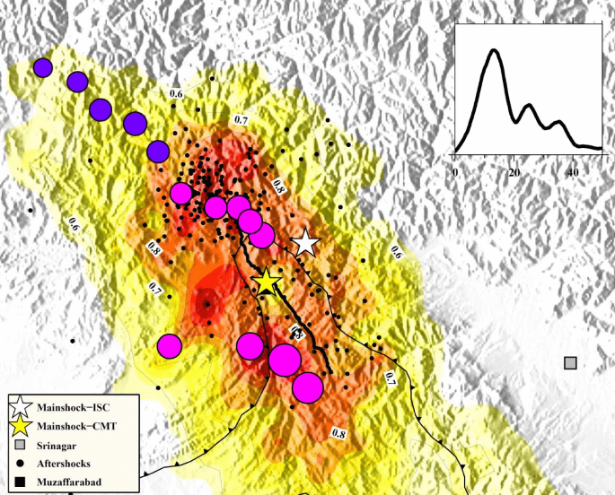

I have worked on "Numeric Weather Prediction" and worked out the effects of a chaotic system of equations onpredictability. I solved the Lorenz system of equations and worked out how changing the initial conditions on the system affected the state of the system at a later time.
I have worked on the seismotectonics of the himalayan region using Back Projection analysis outlined by Ishii et al. (2005) using an algorithm I developed. I have used the back projection of body waves to track the spatiotemporal properties of the rupture for the 2005 Kashmir earthquake and the 2015 Nepal earthquake. The study of the Kashmir region is complete and will soon be submitted for publication in a peer reviewed journal.

I have worked on understanding the Coulomb stress changes that took place across the fault during the 2015 Nepal Earthquake mainshock and the subsequent aftershocks to create an understanding of the effect of the mainshock on triggering of the aftershocks to understand whether there is a clear correlation between the regions of stress accumulation and locations of the aftershock fault planes.
I have worked on finding the focal mechanism using body wave inversion of the 28 th August 2018 Bengal Basin Earthquake which gave us an insight about about the active basement faults beneath the surface. This study has already been submitted for publication in a peer reviewed journal.
I have worked on finding the focal mechanism of the 12 th September Assam Earthquake (M w 5.4) using full waveform body wave inversion to connect it to the underlying tectonics of the region and compare it to the previously observed seismicity in the region. At the moment the study is complete and will soon be submitted for publication in a peer reviewed journal.
Currently, for my MS thesis, I am studying moderate to large (M w > 5.5) intraplate earthquakes of the Bengal basin using full waveform body wave inversion to understand the underlying tectonics of the region and find the causes of these earthquakes. This will create an understanding of the underplating of the Bay of Bengal region under the Burma plate and how this convergence in being accomodated.